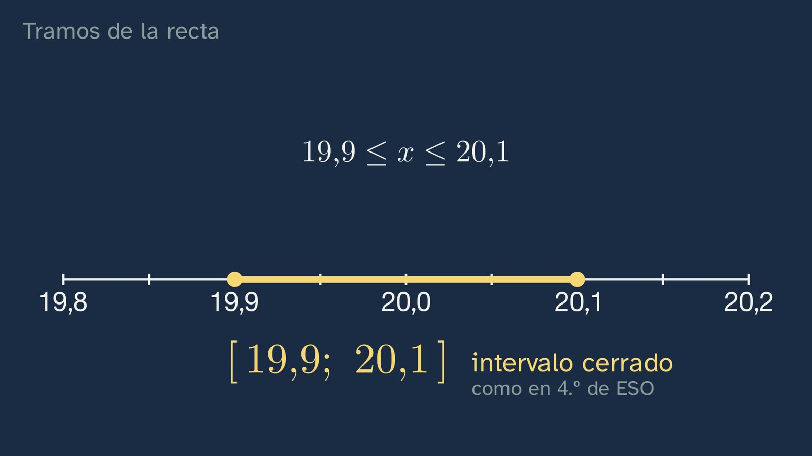
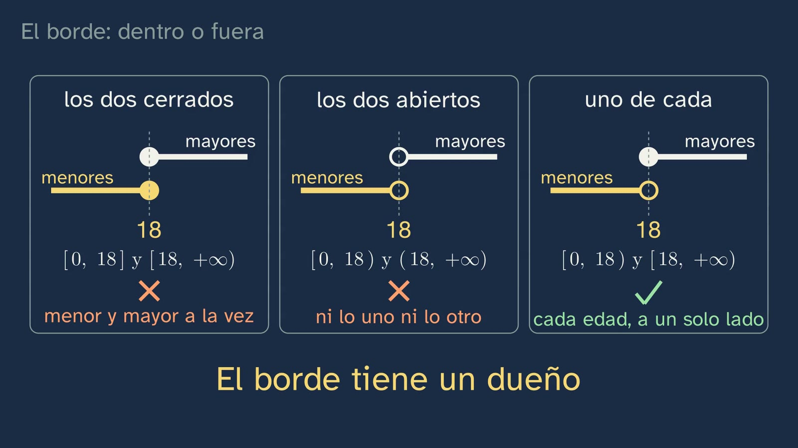
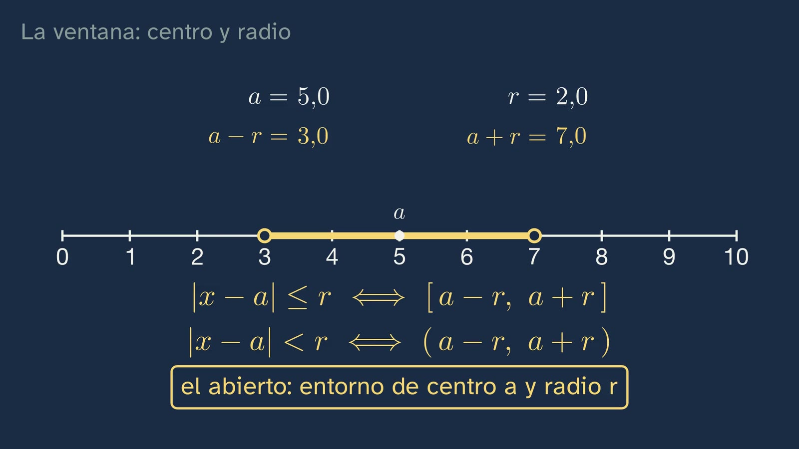
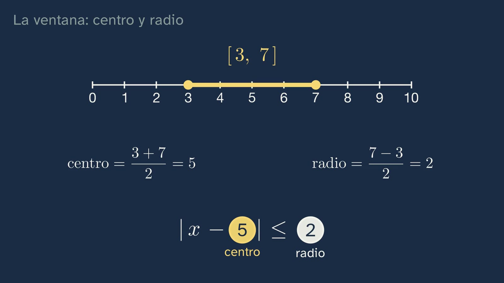

Intervalos y valor absoluto: distancias en la recta
En pocas palabras
La clase 3 llenó la recta: cada punto es un número real. Esta pregunta qué números están cerca de uno dado, y cómo se dice con toda precisión. Empieza recuperando el punto medio de la primera clase (entre dos números siempre cabe otro), que hoy hace falta dos veces, y corrigiendo los tres ejercicios de la clase anterior; el tercero, ¿quién está más cerca de π, 3,14 o 22/7?, deja la primera distancia de la clase: importa cuánto se aparta cada uno, no hacia dónde. El gancho es una pieza inventada de 20 mm «más o menos una décima de milímetro». Las piezas que valen forman un tramo de la recta, el intervalo cerrado [19,9; 20,1], porque «más o menos una décima» quiere decir «como mucho una décima», y el extremo cuenta. Después, el borde: con la mayoría de edad de la Constitución (art. 12), los menores son [0, 18) y los mayores, [18, +∞). La clase pregunta cuál es la edad más alta de un menor, y la respuesta es que no existe: entre cualquier candidato y el 18 cabe su punto medio, y 17,9 periódico ya es 18 (clase 1). El intervalo de los menores no tiene último número; el de los mayores sí tiene primero. Tres paneles explican por qué el borde «tiene un dueño»: con los dos extremos cerrados, al cumplir 18 serías menor y mayor a la vez; con los dos abiertos, ninguna de las dos cosas. Con los cuatro tipos de intervalo ya escritos, llega el valor absoluto: restar dice hacia dónde y cuánto, y el valor absoluto se queda con el cuánto. |x| es la distancia de x al 0, y |x − a|, la distancia entre a y x, comprobada en los dos casos. Las dos ideas se juntan en la ventana: |x − 20| ≤ 0,1 es el intervalo de la pieza dicho con su centro y su radio, y en general |x − a| ≤ r es [a − r, a + r]; el abierto se llama entorno de centro a y radio r. La clase se para a leer la fórmula: si el radio crece, la ventana se abre; si se anula, sólo queda el centro; y |x − a| < 0 no lo cumple nadie, porque una distancia nunca es negativa. Después, el camino de vuelta, de un intervalo a su valor absoluto con el punto medio y la mitad del largo: uno entero y otro con huecos. El error típico es resolver |x| < 3 quitando las barras, que da (−∞, 3): el −5 está ahí y no cumple. Y |x| > 3, fuera de la ventana, son dos tramos que junta la unión. La pregunta abierta sale de la ventana de radio cero: si toda medida es un intervalo, ¿existe la medida exacta?
Objetivo. Al terminar, el alumnado sabrá escribir un conjunto de números como intervalo y traducir |x − a| < r a un intervalo centrado en a.
Lo que esta ficha añade. La clase va al grano, y lo que no responde a su pregunta está aquí: por qué el intervalo de los menores no tiene máximo y qué es el supremo, para quien lo pregunte; la notación ]a, b[, que el alumnado verá en libros franceses y que admite la norma ISO 80000-2; por qué la coma decimal obliga al punto y coma; las tolerancias de verdad, con la norma ISO 2768-1 y el calibre pasa-no pasa; de dónde vienen las dos barras (Weierstrass); el valor absoluto como función a trozos, que llegará con las funciones; las inecuaciones con valor absoluto que vendrán en el tema 3; y la distancia en el plano, que generaliza la de la recta.
Las palabras. «Intervalo» es un tramo de la recta sin huecos, con o sin sus extremos. «Semirrecta» es el que llega al infinito por un lado; algunos libros también lo llaman intervalo infinito o no acotado. «Entorno de centro a y radio r» es el intervalo abierto (a − r, a + r); muchos libros llaman entorno cerrado a [a − r, a + r].
Currículo
Real Decreto 243/2022, Matemáticas I, materia de la modalidad de Ciencias y Tecnología de 1.º de Bachillerato (texto consolidado del BOE; el anexo de Matemáticas no ha cambiado desde 2022). Ningún saber de Matemáticas I nombra los intervalos ni el valor absoluto: los intervalos son de 4.º de ESO, y el valor absoluto no lo nombra ningún decreto estatal, aunque sí varias comunidades (Madrid, Andalucía y Galicia, por ejemplo, en Matemáticas I). Esta clase los trabaja al servicio de lo que el decreto pide con fuerza en Bachillerato: comprobar soluciones, conectar ideas y comunicar con precisión. Los minutos son los del vídeo.
| Elemento | Qué dice el decreto | Dónde se trabaja |
|---|---|---|
| Saber básico A.1 (A. Sentido numérico, 1. Sentido de las operaciones) | «Estrategias para operar con números reales y vectores: cálculo mental o escrito en los casos sencillos y con herramientas tecnológicas en los casos más complicados.» | El punto medio (0:36), las restas de las piezas (7:23), el centro y el radio de un intervalo (11:38), todo de cabeza; y el ejercicio 1, que pide comparar cuadrados |
| Saber básico D.3 (D. Sentido algebraico, 3. Igualdad y desigualdad) | «Resolución de ecuaciones, inecuaciones y sistemas de ecuaciones e inecuaciones no lineales en diferentes contextos.» | Lo prepara: |x − 20| ≤ 0,1 es una inecuación y su solución, un intervalo (10:02); |x| < 3 y |x| > 3 se resuelven (12:43–14:05). Las inecuaciones en general son el tema 3 |
| Saber básico D.4 (D. Sentido algebraico, 4. Relaciones y funciones) | «Propiedades de las distintas clases de funciones, incluyendo, polinómicas, exponenciales, irracionales, racionales sencillas, logarítmicas, trigonométricas y a trozos: comprensión y comparación.» | Lo prepara: la regla de |x|, con un trozo para x ≥ 0 y otro para x < 0 (7:54), es la primera función a trozos del curso, aunque aún no se dibuja como función |
| Saber básico F.1 (F. Sentido socioafectivo, 1. Creencias, actitudes y emociones) | «Tratamiento del error, individual y colectivo como elemento movilizador de saberes previos adquiridos y generador de oportunidades de aprendizaje en el aula de matemáticas.» | El error de quitar las barras (12:43), con su pausa para pensarlo antes; y la trampa del 17,999… (5:40) |
| Competencia específica 2 | «Verificar la validez de las posibles soluciones de un problema empleando el razonamiento y la argumentación para contrastar su idoneidad.» | El −5 que desmonta la solución (−∞, 3) (13:08): comprobar una solución con un número concreto; y los dos casos de |x − a| (8:57) |
| Competencia específica 5 | «Establecer, investigar y utilizar conexiones entre las diferentes ideas matemáticas estableciendo vínculos entre conceptos, procedimientos, argumentos y modelos para dar significado y estructurar el aprendizaje matemático.» | El punto medio de la clase 1, que reaparece en el intervalo sin último número (5:40) y en el centro de la ventana (9:44 y 11:38); el 0,999… = 1 de la clase 1 (6:06); y la distancia, que junta intervalos y valor absoluto (10:02) |
| Competencia específica 6 | «Descubrir los vínculos de las matemáticas con otras áreas de conocimiento y profundizar en sus conexiones, interrelacionando conceptos y procedimientos, para modelizar, resolver problemas y desarrollar la capacidad crítica, creativa e innovadora en situaciones diversas.» | Con la técnica, la tolerancia de una pieza (2:51); con el derecho, la mayoría de edad de la Constitución (4:28); con la física, la medida y su margen (15:08) |
| Competencia específica 7 | «Representar conceptos, procedimientos e información matemáticos seleccionando diferentes tecnologías, para visualizar ideas y estructurar razonamientos matemáticos.» | Cada conjunto, de tres maneras: con desigualdades, dibujado en la recta y con la notación de intervalo (6:43) |
| Competencia específica 8 | «Comunicar las ideas matemáticas, de forma individual y colectiva, empleando el soporte, la terminología y el rigor apropiados, para organizar y consolidar el pensamiento matemático.» | La notación: corchete o paréntesis, punto y coma con la coma decimal, el infinito siempre abierto, la unión |
| Competencia específica 9 | «Utilizar destrezas personales y sociales, identificando y gestionando las propias emociones, respetando las de los demás y organizando activamente el trabajo en equipos heterogéneos, aprendiendo del error como parte del proceso de aprendizaje y afrontando situaciones de incertidumbre, para perseverar en la consecución de objetivos en el aprendizaje de las matemáticas.» | Las apuestas (3:30 y 5:22) y el error (12:43), sin castigo para quien falla |
| Criterio 2.1 | «Comprobar la validez matemática de las posibles soluciones de un problema, utilizando el razonamiento y la argumentación.» | El −5 (13:08); y el ejercicio 1, que pide decir si √2 y √5 están dentro |
| Criterio 5.1 | «Manifestar una visión matemática integrada, investigando y conectando las diferentes ideas matemáticas.» | El punto medio y el 0,999… de la clase 1, dentro de esta |
| Criterio 6.1 | «Resolver problemas en situaciones diversas, utilizando procesos matemáticos, estableciendo y aplicando conexiones entre el mundo real, otras áreas de conocimiento y las matemáticas.» | La pieza y la mayoría de edad; el reto de la hoja del alumnado |
| Criterio 7.1 | «Representar ideas matemáticas, estructurando diferentes razonamientos matemáticos y seleccionando las tecnologías más adecuadas.» | La ventana viva, que se desliza y se abre (10:29) |
| Criterio 8.2 | «Reconocer y emplear el lenguaje matemático en diferentes contextos, comunicando la información con precisión y rigor.» | Toda la notación de la clase, y el porqué de cada signo |
| Criterio 9.1 | «Afrontar las situaciones de incertidumbre identificando y gestionando emociones y aceptando y aprendiendo del error como parte del proceso de aprendizaje de las matemáticas.» | Las apuestas y el error |
Lo que hay que traer de la ESO (Real Decreto 217/2022, texto consolidado). En 4.º, en las dos opciones: «Orden en la recta numérica. Intervalos.» (A.4 en Matemáticas A; A.3 en Matemáticas B). Por eso la voz dice «como los que ya viste en cuarto de la ESO»: la clase los recupera y los lleva más lejos. El valor absoluto no lo pide el decreto de la ESO; muchos libros lo dan en 2.º o 3.º con los enteros. De las clases anteriores del tema: el punto medio (clase 1), 0,999… = 1 (clase 1), √2 y √5 (clases 2 y 3), y la recta sin huecos (clase 3).
Cómo está construida la clase
Capítulos del vídeo
Casi dieciséis minutos (15:46), en nueve capítulos, con un hilo: recuperar y corregir; un tramo de la recta; el borde; la distancia; la ventana, que junta las dos ideas; un error; practicar. Tiene dos paradas para pensar lo que se hace (el intervalo sin último número, 5:40, y la fórmula de la ventana leída, 11:06), en pocas frases y con su silencio. Ximena sale a cámara cuatro veces, unos veinte segundos en total: al saludar (0:00), con el gancho (2:51), a mitad (7:16) y al despedirse (15:37).
| Capítulo | Qué pasa | Por qué así |
|---|---|---|
| Qué vamos a ver (0:00) | Ximena saluda. El mapa de las seis clases del tema, con la cuarta resaltada. «Hoy vamos a medir distancias en la recta»: qué números están cerca de uno dado, y cuánto se aparta un número de otro. | El tema 1 conserva su mapa numerado. La pregunta nace de la clase anterior: si cada punto es un número, ¿cómo se dice «cerca»? |
| Lo que ya sabes (0:22) | ¿Cabe siempre otro número entre dos? ¿Cómo lo encuentras? Pausa. Sí: el punto medio, (a + b)/2; entre 1 y 2, 1,5; entre 1 y 1,5, 1,25, y así sin parar (0:36). «Hoy nos hará falta dos veces.» | Recuperar antes de oír la respuesta. Las dos veces: el intervalo sin último número (5:40) y el centro de la ventana (9:44, 11:38). |
| Las soluciones de la clase anterior (0:56) | √10 con un triángulo de catetos 3 y 1. El orden, cifra a cifra (1:29): la tercera cifra separa 1,41; la quinta, los otros tres. Y π: 3,14 se queda corto en unas 16 diezmilésimas; 22/7 se pasa en unas 13 (2:11). «No nos ha importado hacia dónde se aparta cada uno, sino cuánto. Eso es una distancia.» | Cada una con su enunciado y breve. La tercera abre la clase: es una distancia sin nombre todavía. |
| Tramos de la recta (2:51) | El gancho: «Imagina una fábrica…». Las piezas que valen, de 19,9 a 20,1 (2:59); cuatro despacio y un lote inventado a velocidad. ¿Vale la de 20,1 justo? Pausa (3:30). Vale: «más o menos una décima» es «como mucho una décima» (3:40). El intervalo cerrado [19,9; 20,1], con punto y coma, y con desigualdades. | Una vez despacio y el resto a velocidad: el intervalo sale de los datos. La pregunta del borde prepara la parte siguiente. |
| El borde: dentro o fuera (4:28) | La Constitución, art. 12. Los menores, [0, 18), con el 18 hueco; los mayores, [18, +∞), y el infinito siempre con paréntesis: «no es un número de la recta» (4:59). ¿Cuál es el número más grande de [0, 18)? Pausa (5:22). No existe: entre cualquiera y el 18 cabe su punto medio, y 17,999… ya es 18 (5:40). Tres paneles: los dos cerrados, los dos abiertos, uno de cada (6:19). Los cuatro tipos, en filas hermanas (6:43). Ximena a mitad (7:16). | Lo que nadie cuenta: el semiabierto no es un capricho de notación, decide de qué lado cae el borde. La lupa nace del 18: primero dónde, después qué hay. |
| La distancia: el valor absoluto (7:23) | Restar dice hacia dónde y cuánto (7:23). El valor absoluto quita el signo; la regla, a trozos, con el «menos equis» explicado; |x| es la distancia al 0 (7:54). |x − a|, la distancia entre a y x, con la cifra viva mientras x se mueve (8:33). ¿Cómo lo sabemos? Dos casos, y −2 y 3 contados paso a paso (8:57). ¿Qué número está a la misma distancia del 1 que del 5? Pausa (9:32). El 3, su punto medio (9:44). | Primero la intuición (las piezas), después lo exacto (la regla), y la prueba de lo que se afirma. El dato vivo enseña lo que la tiza no: el signo cambia y la distancia no. |
| La ventana: centro y radio (10:02) | |x − 20| ≤ 0,1 es el intervalo de la pieza, con su centro y su radio (10:02). La ventana viva: se desliza y se abre; |x − a| ≤ r ⇔ [a − r, a + r], y el abierto es el entorno (10:29). Para pensar: la fórmula leída (11:06). Al revés: [3, 7], entero (11:38), y (2, 8), con huecos y pausa (12:09–12:22). | La animación central. Primero la forma vacía, |x − ○| ≤ ○, y cada número viaja a su hueco con su color. Ejemplo entero y luego con huecos. |
| El error: olvidar un lado (12:43) | Resolver |x| < 3 quitando las barras da (−∞, 3). Pausa. Se tacha el paso, «quitando las barras», y no la flecha: la implicación «si |x| < 3, entonces x < 3» es verdadera. El −5 está en ese tramo y no cumple: |−5| = 5 (13:08). La solución es (−3, 3). Y |x| > 3: dos tramos, con la unión (13:37). | El error, desmontado con un contraejemplo: es comprobar una solución (criterio 2.1). |
| Para practicar y seguir pensando (14:05) | Recapitulación. Tres ejercicios (14:36). La pregunta abierta, con su pausa: ¿existe la medida exacta? (15:08). La clase 5, los logaritmos (15:30), y la despedida (15:37). | Las soluciones abren la clase siguiente. La pregunta abierta va también en los comentarios. |
Puentes con otras materias. Física y Química: toda medida tiene su incertidumbre, y se escribe como un valor con su margen, igual que la pieza (es la idea de la pregunta abierta; el tema de la medida, en Física y Química, lo trabaja). Tecnología y Dibujo Técnico: las tolerancias de los planos (véase «A fondo»). Economía y Derecho: los tramos de edad, de renta o de precio son intervalos, y quien redacta una norma decide de qué lado cae cada borde.



Plan de una sesión de 50 minutos
Pensado para ver el vídeo entero en clase, a trozos, con la hoja del alumnado.
| Minutos | Qué se hace |
|---|---|
| 0–5 | Sin vídeo, en parejas: «Antes de ver el vídeo», en la hoja. Las seis piezas, las dos restas y la apuesta de la edad. |
| 5–8 | Vídeo de 0:00 a 2:51: el mapa, la pregunta de recuperar (parar en la pausa y contestar de palabra) y las soluciones de la clase 3. Si ya se corrigieron en el aula, se salta de 0:56 a 2:51. |
| 8–12 | Vídeo de 2:51 a 4:28: la pieza. Parar en 3:30 y votar a mano alzada si vale la de 20,1; comparar con la tabla de piezas del principio. |
| 12–19 | Vídeo de 4:28 a 6:43: el borde. Parar en 5:22: cada cual escribe su apuesta y se leen dos o tres. Después de 6:19, un minuto: ¿qué otros bordes conocéis (precios, edades, notas)? |
| 19–24 | Vídeo de 6:43 a 7:23: los cuatro tipos. Sin vídeo, la tabla «Los cuatro tipos» de la hoja, en parejas. |
| 24–30 | Vídeo de 7:23 a 9:44: el valor absoluto. Parar en 9:32 y contestar en la hoja. |
| 30–36 | Vídeo de 9:44 a 12:22: la ventana. Parar en 12:09 y hacer (2, 8) en la hoja antes de ver la solución. |
| 36–40 | Vídeo de 12:22 al final (15:46): el error, los ejercicios y la pregunta abierta. Parar en el error y preguntar antes de seguir. |
| 40–50 | «La ventana, con huecos», de la hoja, en parejas, y su puesta en común: obliga a pasar de un intervalo con un extremo negativo a su valor absoluto, que es donde más se falla. Para casa: los tres ejercicios y la pregunta abierta. |
Errores típicos y cómo se tratan
Con una advertencia honesta: ninguno está medido, que sepamos, con alumnado español de Bachillerato. Son confusiones que prevé el diseño y que recoge la ficha del tema.
- Resolver |x| < 3 quitando las barras: «x < 3», es decir, (−∞, 3). La clase lo plantea con pausa (12:43) y lo desmonta con un número que está en ese tramo y no cumple: −5 < 3, pero |−5| = 5, que no es menor que 3 (13:08). Ojo al enunciarlo: la implicación «si |x| < 3, entonces x < 3» es verdadera, porque (−3, 3) está dentro de (−∞, 3). Lo falso es que (−∞, 3) sea la solución. Conviene que el alumnado vea las dos cosas: un error de lógica (confundir una consecuencia con una equivalencia) y uno de cálculo (perder un lado). La regla que deja la clase: |x| < r es estar a menos de r del cero, por los dos lados.
- El infinito con corchete: [18, +∞]. Se trata en 4:59: el infinito no es un número real, no hay ningún punto de la recta donde cerrar. En cursos posteriores el alumnado verá la «recta ampliada» con ±∞ como elementos, y por eso la pantalla dice «número real».
- «El intervalo [0, 18) acaba en 17,999…». Es la trampa de 5:40, y la cierra la clase 1: 17,999… = 18, que no está en el intervalo. Y cualquier número decimal concreto menor que 18 tiene otro entre él y 18, su punto medio. El intervalo tiene supremo (18) pero no máximo; véase «A fondo».
- Confundir el signo de la resta con la distancia: «la distancia de 19,97 a 20 es −0,03». Se trata en 7:23: la resta dice hacia dónde y cuánto; la distancia, sólo cuánto. Lo refuerza el dato vivo de 8:33.
- «|x| = −x quiere decir que el valor absoluto es negativo». La regla escribe −x para los x negativos, y entonces −x es positivo: si x = −3, −x = 3. La clase lo dice en voz (7:54) porque la confusión es clásica.
- |x + 1| leído como «la distancia a 1». La clase no llega a verlo, y el ejercicio 2 lo provoca: |x + 1| = |x − (−1)| es la distancia a −1. Conviene decirlo en el aula al corregir.
- Centro y radio al revés, o el radio como el largo entero. Es el error del camino de vuelta (11:38). [3, 7] mide 4, y el radio es 2, la mitad. La hoja del alumnado lo practica con un intervalo con un extremo negativo, [−4, 10], donde el radio, 7, no se ve a ojo.

Preguntas y soluciones
Para y piensa (dentro del vídeo)
- Entre dos números distintos, ¿cabe siempre otro? ¿Y cómo lo encontrarías? (0:22) Sí: el punto medio, (a + b)/2, está entre los dos y a la misma distancia de cada uno. Repitiendo, se encuentran infinitos. Es la «densidad» de la clase 1, que allí se vio con fracciones y vale igual con cualquier par de números reales.
- ¿Y una pieza que mida 20,1, justo? ¿Vale o no vale? (3:30) Vale: «más o menos una décima» es «como mucho una décima», y 20,1 se aparta justo una décima. Lo que merece la nota es el porqué, no el sí. En un taller de verdad, nadie mide «20,1 justo»: el instrumento tiene su margen (véase la pregunta abierta).
- ¿Cuál es la edad más alta que puede tener un menor? Es decir, el número más grande de [0, 18). (5:22) No existe. Si alguien dice un número x < 18, (x + 18)/2 está entre x y 18, y sigue siendo menor que 18. Y 17,999… no vale, porque es 18. Criterios: el argumento del punto medio, o cualquier otro que muestre que para cada candidato hay uno mayor dentro; «17,999…» como respuesta, con su refutación.
- ¿Qué número está a la misma distancia del uno que del cinco? (9:32) El 3: |3 − 1| = |3 − 5| = 2. Es el punto medio, (1 + 5)/2. Y es el único: a la izquierda del 1, cualquier número está más cerca del 1 que del 5; entre 1 y 5, sólo el punto medio equidista; a la derecha del 5, más cerca del 5.
- El intervalo abierto de dos a ocho: ¿su centro? ¿Y su radio? (12:09) Centro 5, (2 + 8)/2; radio 3, (8 − 2)/2. Como es abierto, |x − 5| < 3.
- Hay quien resuelve |x| < 3 quitando las barras: x < 3, de menos infinito a tres. ¿Qué falla? (12:43) Véase el error 1.
Las dos paradas para pensar
- El intervalo sin último número (5:40–6:19). Lo que dice la clase es exacto y no necesita más: para cada número menor que 18 hay otro mayor y menor que 18. Para quien quiera nombrarlo: 18 es el supremo de [0, 18), la menor de sus cotas superiores, pero no es su máximo, porque no pertenece al intervalo. Que todo conjunto de reales acotado superiormente tenga supremo es otra forma del axioma de la recta sin huecos de la clase 3: con fracciones no pasaría (el conjunto de las fracciones cuyo cuadrado es menor que 2 no tiene supremo entre las fracciones). Una pregunta para el debate: ¿hay un último instante en que eres menor? Según el Código Civil, art. 240, «La mayor edad empieza a los dieciocho años cumplidos» y el día del nacimiento se cuenta completo: eres mayor desde que empieza el día del cumpleaños. Si el tiempo se mide con números reales, no hay un último instante de ser menor, pero sí un primero de ser mayor. En derecho penal, el Tribunal Supremo cuenta de momento a momento, con la hora del nacimiento; la clase no entra en eso.
- La fórmula leída (11:06–11:38). |x − a| ≤ r: si r crece, la ventana se abre; si r = 0, sólo la cumple x = a; con < 0, ningún número, porque una distancia nunca es negativa. Con r < 0, |x − a| ≤ r tampoco tiene solución: la clase no lo dice para no abrir un caso que no hace falta, pero el alumnado lo puede deducir. Y la frase final, «con radio cero, sólo valdría una pieza perfecta», prepara la pregunta abierta.

De la hoja del alumnado
- Antes de ver el vídeo: las seis piezas. Valen 20,07, 19,97, 20,1 y 19,9; no valen 20,13 ni 19,85. La duda esperada está en los dos bordes: valen.
- 7 − 3 y 3 − 7. 4 y −4. De 3 a 7 hay 4, y de 7 a 3 también: la distancia es el valor absoluto de cualquiera de las dos restas.
- La apuesta de la edad. No hay respuesta: es la trampa de 5:22.
- Mientras ves el vídeo. Son los para y piensa de arriba y la clase en preguntas. El punto y coma: con la coma decimal, una coma entre extremos se confundiría ([19,9, 20,1] se podría leer como tres números). El 18: cerrado en [18, +∞) porque a los 18 ya eres mayor; abierto en [0, 18) por lo mismo. El infinito, abierto: no es un número real, no hay punto donde cerrar. El signo y el valor absoluto: hacia dónde y cuánto. El −x: véase el error 5. La ventana: se abre, se queda en el centro, nadie. El error: el −5, y la solución (−3, 3).
- Los cuatro tipos. [19,9; 20,1], cerrado; (2, 5), abierto; [0, 18), semiabierto (cerrado por la izquierda); (−∞, 3), semirrecta, abierta.
- La ventana, con huecos: [−4, 10]. Centro (−4 + 10)/2 = 3; radio (10 − (−4))/2 = 7; |x − 3| ≤ 7, con ≤ porque los extremos entran. Comprobación: |−4 − 3| = 7 ≤ 7, cumple; |10 − 3| = 7, cumple; |11 − 3| = 8 > 7, no cumple. Abierto: |x − 3| < 7, el entorno de centro 3 y radio 7. Lo que saldrá: el radio 3 (confundir centro y radio) o 6 (restar mal −4).
Para practicar (las soluciones abren la clase 5)
- Escribe |x − 2| ≤ 0,5 como intervalo. ¿Están dentro √2 y √5? Los números a 0,5 o menos del 2: [1,5; 2,5]. √2 queda fuera: 1,5² = 2,25 > 2, así que √2 < 1,5. √5 queda dentro: 2,25 < 5 < 6,25 = 2,5², así que 1,5 < √5 < 2,5. Criterios: el intervalo cerrado, con punto y coma; la comparación por los cuadrados (clase 2: entre positivos, el orden de los cuadrados es el de los números) o con decimales, diciendo por qué basta la aproximación (√2 = 1,414…, √5 = 2,236…). Lo que saldrá: «(1,5; 2,5)», abierto: el ≤ dice que los bordes entran.
- Escribe [−1, 3] con un valor absoluto. Centro (−1 + 3)/2 = 1; radio (3 − (−1))/2 = 2: |x − 1| ≤ 2. Lo que saldrá: |x + 1| ≤ 2 (el centro con el signo cambiado; véase el error 6); |x − 1| < 2 (el intervalo es cerrado); radio 4 (el largo entero).
- ¿Qué números cumplen |x − 1| > 2? Escríbelo con intervalos. Los que están a más de 2 del 1: menores que −1 o mayores que 3. (−∞, −1) ∪ (3, +∞), con los bordes abiertos porque el > es estricto. Lo que saldrá: «(−1, 3)», que es justo lo contrario (lo de dentro de la ventana); o (−∞, −1] ∪ [3, +∞), con los bordes cerrados.
Más de la hoja del alumnado
- ¿Es [0, 1) lo mismo que [0, 0,999…]? No: 0,999… = 1, así que [0, 0,999…] es [0, 1], que contiene el 1, y [0, 1) no. Es la clase 1 al servicio de la de hoy.
- ¿Está π en (3,14; 22/7)? ¿Cuál es su centro? Sí: 3,14 < π < 22/7 (clase 3: 3,14 se queda corto y 22/7 se pasa). Su centro es (3,14 + 22/7)/2 = 3,14142857…, que no es π: está más cerca, a unas 0,00016 de π, pero no lo es. Buena ocasión para recordar que el punto medio de dos aproximaciones no es el número.
- El reto: 50 mm, ± 0,2. Valen |x − 50| ≤ 0,2, es decir, [49,8; 50,2]. Como números, no valen (−∞; 49,8) ∪ (50,2; +∞); como longitudes de piezas, de 0 a 49,8 (sin incluirlos) o más de 50,2. La distancia más grande entre dos piezas que valen es 0,4 mm, el largo de la ventana, el doble del radio.
Para seguir pensando. Ninguna medida sale con radio cero: cualquier medida tiene su margen, y es un intervalo. Entonces, ¿qué quiere decir que algo mide exactamente dos metros? ¿Existe la medida exacta? La clase la deja abierta. Algunas pistas para el debate:
- Lo que dice la metrología. El resultado de una medida «is only an approximation or estimate of the value of the measurand and thus is complete only when accompanied by a statement of the uncertainty» (GUM, JCGM 100:2008, 3.1.2): una medida es un valor con su incertidumbre. Que a veces se dé un solo número quiere decir que el margen se considera despreciable para lo que se quiere (VIM, JCGM 200:2012, 2.9, nota 2), no que no exista.
- Lo exacto por definición. Algunas cosas sí son exactas, porque se definen así. Desde 1983, el metro se define fijando la velocidad de la luz en el vacío: exactamente 299 792 458 m/s (BIPM, el Sistema Internacional, SI Brochure). Lo exacto es la definición, no ninguna medida concreta. Es una buena distinción para el aula: medir y definir.
- Las matemáticas y el mundo. En la recta, «dos» es un punto, radio cero. En el mundo, cada medida es una ventana. ¿Es la recta real una idealización del mundo, o el mundo es así y nosotros no llegamos? Enlaza con la reflexión de la clase 3 sobre el espacio continuo: nadie lo sabe.
- El profesor modera y no cierra.
A fondo
Supremo y máximo. Un conjunto acotado superiormente tiene supremo si hay una cota superior menor que todas las demás. [0, 18) tiene supremo 18 y no tiene máximo; [0, 18] tiene las dos cosas. La existencia del supremo para todo conjunto de reales acotado y no vacío es equivalente al axioma de la recta sin huecos de la clase 3 (Dedekind, 1872, con sus cortaduras): con fracciones falla, porque {q racional : q² < 2} está acotado y no tiene supremo racional. Es de primer curso de universidad; en Bachillerato basta con el argumento del punto medio que da la clase.
La notación ]a, b[. La norma internacional de símbolos matemáticos, ISO 80000-2:2019, ítem 2-7.10, escribe el intervalo abierto (a, b) y añade: «The notation ]a, b[ is also used». En Francia es la habitual (allí, además, con punto y coma: ]a ; b[). Que la introdujera el grupo Bourbaki se repite mucho, pero no lo hemos podido confirmar en una fuente primaria, así que no lo afirmamos. Para el alumnado: es otra manera de escribir lo mismo, y conviene conocerla porque aparece en libros y en la universidad.
El punto y coma. La misma norma, en su cláusula 4, dice que la coma es el separador preferido entre los elementos de una lista «except when numbers with a decimal comma are used». En español, el punto y coma va pegado al número que lo precede: [19,9; 20,1]. Con extremos enteros, la coma basta: [0, 18).
Las tolerancias de verdad. La pieza de la clase es un ejemplo, pero el margen no es inventado. La norma ISO 2768-1:1989 (en España, UNE-EN 22768-1:1994, idéntica) fija las tolerancias generales: las de las cotas que un plano dibuja sin tolerancia escrita. En el cajetín del plano se pone, por ejemplo, «ISO 2768-f», y entonces una cota de 20 mm, que está entre 6 y 30 mm, admite ± 0,1 mm en la clase fina (± 0,2 en la media, ± 0,5 en la gruesa). Si el plano escribe «20 ± 0,1», es una tolerancia individual, que en este caso coincide. La ISO tiene en publicación una edición nueva de la ISO 2768 (octubre de 2026) que sustituirá a la de 1989; por eso conviene citarla siempre con su año. En los talleres, la ventana se comprueba sin medir, con un calibre pasa-no pasa: para un eje, una boca con la medida máxima por la que la pieza buena tiene que pasar, y otra con la mínima por la que no tiene que pasar. Es un intervalo hecho de acero: cada boca es un extremo.
Las dos barras. El símbolo |x| lo escribió Karl Weierstrass en un trabajo de 1841 sobre series de potencias, para números complejos, que no se imprimió hasta 1894, en sus Mathematische Werke (I, p. 67); lo cuenta Cajori, A History of Mathematical Notations, vol. II, § 492, p. 123.
El valor absoluto como función. La regla de 7:54 define una función a trozos, f(x) = x si x ≥ 0 y f(x) = −x si x < 0, cuya gráfica es una V con el vértice en el origen. Se trabajará con las funciones (saber D.4). Una propiedad que el alumnado puede comprobar: |x| = √(x²).
Las inecuaciones con valor absoluto. Las dos reglas de la clase bastan para las sencillas: |x − a| < r ⇔ a − r < x < a + r, y |x − a| > r ⇔ x < a − r o x > a + r (con r > 0). Varias comunidades las piden en Matemáticas I («Inecuaciones polinómicas, racionales y de valor absoluto sencillas», Madrid y Andalucía). El canal las retoma en el tema 3, con las inecuaciones.
La distancia en el plano. En la recta, la distancia entre a y x es |x − a| = √((x − a)²). En el plano, la de dos puntos es √((x₁ − x₂)² + (y₁ − y₂)²), que es Pitágoras: la misma idea con una dimensión más. Y la del taxista, que la ficha de la clase 3 proponía como actividad, es |x₁ − x₂| + |y₁ − y₂|: dos valores absolutos sumados.
Una actividad para el aula
Los bordes de las normas (unos 30 minutos, en grupos; trabaja la competencia 6, el criterio 8.2 y, de paso, la lectura de textos legales). La clase usó la mayoría de edad; el mundo está lleno de bordes.
- Buscar (10 minutos). Cada grupo busca tres reglas reales con un tramo de números: tarifas por edad de un museo o de un transporte de su ciudad, tramos de un impuesto, las categorías por edad de una federación deportiva, la talla de una prenda. Apuntan la fuente (dónde lo dice, con su enlace o su documento).
- Traducir (10 minutos). Cada regla, con desigualdades y con intervalos. Y la pregunta de la clase: ¿quién es el dueño de cada borde? Si la norma no lo dice («de 4 a 12 años»: ¿el día que cumples 12 pagas o no?), se apunta como ambiguo.
- Discutir (10 minutos). ¿Hay reglas con bordes que se solapan (dos tarifas a la vez) o con huecos (una edad sin tarifa)? ¿Cómo las redactaríais para que cada caso caiga en un solo lado? Es lo que hace la clase con los tres paneles (6:19), con una norma real.
Otra opción, la ventana de la clase (unos 20 minutos). Cada alumno mide con su regla el ancho de un mismo folio A4, en milímetros con un decimal si puede. Se juntan las medidas en la pizarra. Preguntas: ¿cuál es el intervalo de todas las medidas, del menor al mayor? Escríbelo con su centro y su radio, |x − c| ≤ r. ¿Está 210 mm, el ancho nominal del A4, dentro? ¿Por qué no salen todas iguales? Y la pregunta abierta, con datos de la propia clase: ¿cuánto mide de verdad el folio?

Recursos abiertos
Para seguir trabajando lo de la clase, todos gratuitos. Enlaces comprobados el 17/10/2026.
| Recurso | Qué cubre | Cómo usarlo en clase |
|---|---|---|
| GeoGebra, Calculadora gráfica | Gráficas y desigualdades con deslizadores, en el navegador y en español. Gratis para uso no comercial (licencia no comercial de GeoGebra) | Escribir |x − a| ≤ r con dos deslizadores, a y r, y ver la ventana moverse, como en 10:29; y la V de |x| |
| Marea Verde, Matemáticas I, capítulo 1 | El capítulo «Números reales y complejos» (revisado en 2024), con valor absoluto, distancia, intervalos y entornos, en español. Gratis | Ejercicios de práctica de intervalos y entornos |
| EDAD, «Los números reales», 4.º de ESO B (Red Descartes) | La unidad interactiva de la ESO con los intervalos, en español. CC BY-NC-SA 4.0 | Repaso de la ESO antes de la clase, para quien llegue sin los intervalos |
| Constitución Española, art. 12 y Código Civil, art. 240 (BOE) | Los textos de la mayoría de edad, consolidados | La actividad de los bordes: leer la norma de verdad |
| GUM y VIM (BIPM, JCGM) | La guía de la incertidumbre de medida y el vocabulario de metrología, en inglés, en PDF libre | Para la pregunta abierta: qué es una medida y por qué lleva su margen |
Lo que la clase deja fuera, y por qué
La clase tiene una pregunta, cómo se dice con precisión qué números están cerca de uno dado, y lo que no la responde se queda fuera.
- Operaciones con intervalos (intersección), intervalos acotados y cotas. Algunos libros las dan aquí. La clase usa la unión una vez, para |x| > 3, porque la pide el error; la intersección llegará con las inecuaciones y los sistemas, en el tema 3.
- Las propiedades del valor absoluto (|a · b| = |a| · |b|, la desigualdad triangular |a + b| ≤ |a| + |b|). La triangular es la de la clase 3, «dos lados suman más que el tercero», en la recta; queda para cuando se trabajen los vectores.
- Las inecuaciones con valor absoluto más difíciles (|2x − 3| ≤ 5, |x − 1| ≥ |x + 2|): el tema 3.
- El error absoluto y el relativo. Están muy cerca de esta clase (el error absoluto es una distancia), pero tienen su sitio en el tema 2, clase 2, «¿Cuánto nos equivocamos?». Por eso el ejercicio 3 de la clase anterior se contestó como una distancia, sin llamarla todavía error.
- La función valor absoluto y su gráfica. Con las funciones, saber D.4.
Fuentes
- Real Decreto 243/2022, anexo II, Matemáticas, texto consolidado (BOE): https://www.boe.es/buscar/act.php?id=BOE-A-2022-5521. La ESO: Real Decreto 217/2022, texto consolidado (BOE), Matemáticas de 4.º, opciones A y B: https://www.boe.es/buscar/act.php?id=BOE-A-2022-4975.
- Constitución Española, art. 12 (BOE-A-1978-31229): https://www.boe.es/buscar/act.php?id=BOE-A-1978-31229#a12. Código Civil, art. 240, en la redacción de la Ley 8/2021, en vigor desde el 03/09/2021 (antes, art. 315): https://www.boe.es/buscar/act.php?id=BOE-A-1889-4763#a240. El cómputo penal, de momento a momento: STS de 26 de mayo de 1999, citada en el caso práctico 101 de Delictum (Universidad de Navarra), no leída en el original.
- ISO 2768-1:1989, General tolerances — Part 1, tabla 1 (p. 2) y apartado 5; UNE-EN 22768-1:1994 (ficha de UNE); la edición nueva de la ISO 2768, en la ficha de la ISO (https://www.iso.org/standard/85741.html).
- ISO 80000-2:2019, Quantities and units — Part 2: Mathematics, cláusula 4 e ítem 2-7.10.
- K. Weierstrass, «Zur Theorie der Potenzreihen» (1841), en Mathematische Werke, I (Berlín, 1894), p. 67; F. Cajori, A History of Mathematical Notations, vol. II (1929), § 492, p. 123.
- El calibre pasa-no pasa: Wikipedia en inglés, «Go/no-go gauge».
- JCGM 100:2008 (GUM), 3.1.2: https://www.bipm.org/documents/20126/2071204/JCGM_100_2008_E.pdf. JCGM 200:2012 (VIM), 2.9, nota 2: https://www.bipm.org/documents/20126/2071204/JCGM_200_2012.pdf. La definición del metro: BIPM, The International System of Units (SI), 9.ª ed. (2019).
- R. Dedekind, Stetigkeit und irrationale Zahlen (Braunschweig, 1872), § 3; traducción inglesa de W. W. Beman (1901): https://www.gutenberg.org/ebooks/21016.
- Cada cuenta de esta ficha está comprobada ejecutándola con sympy y Decimal el 17/10/2026: las soluciones de la clase 3, el punto medio, las piezas, el 17,9995, los centros y radios, las soluciones de los ejercicios, √2 y √5 frente a [1,5; 2,5] y el centro de (3,14; 22/7). Los ejemplos de la clase y de esta ficha son propios: la pieza y su lote, inventados; la mayoría de edad, de la Constitución.
Sobre esta clase
GinCol Lab es un canal gratuito de ciencia para curiosos. Ximena es un personaje ilustrado, no una persona real, y su voz es sintética: está generada por ordenador con Microsoft Azure AI Speech y no imita a ninguna persona conocida. La pizarra está animada con Manim. El guion y esta ficha los escribe una IA (Claude, de Anthropic) y los revisa una persona antes de publicarse. Cada dato está comprobado en dos fuentes o en la original, cada cita en su texto y cada cuenta ejecutándola. Las imágenes de esta ficha salen de la pizarra del propio vídeo. Si ves un error, dínoslo: aprender también es corregir.
Esta ficha se publica con licencia Creative Commons Reconocimiento 4.0: puedes copiarla, adaptarla y usarla en tu aula citando a GinCol Lab.
Cómo citar esta ficha
GinCol Lab (2026). Intervalos y valor absoluto: distancias en la recta. Ficha docente de GinCol Lab: Matemáticas I · 1.º de Bachillerato · Los números reales · Clase 4 de 6. https://gincollab.github.io/aula/matematicas-i/t01-c4/. CC BY 4.0.
Ficha docente de GinCol Lab · CC BY 4.0 · Código fuente y erratas